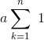
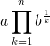

A collection of scales based on the harmonic series, with a touch of xen.
This pattern has become a compilation. It began with just the two related bizarro takes on the harmonic series I developed together back in 2016: the matharmonic series and the edharmonic series. But when it came time to implement some of the other musical scales I've described that are also based on the harmonic series, I balked at the idea of introducing a separate pattern as their home, and/or I was tempted by the challenge to achieve them using the same underlying mechanisms through which I was bringing the matharmonic and edharmonic to life. Well, I shouldn't write the act off as a mere indulgence; indeed I have many good reasons for my goal to standardize my recent musical work under a single system.
So in the end, this pattern contains the power to take the form of my matharmonic and edharmonic series, as well as the third tritave of the odd harmonics, and my set of "particular" series, plus some others. To make this happen, Xenharmonic series has by far the most complicated specs of any of my patterns, with a whopping thirteen interactive controls. Please check out the presets — those are my original patterns — but take a look at which of the controls they care about, and explore fiddling with them and creating new Frankenstein scales from all the harmonic series related ideas at play here.
I suppose I'll more or less copy and paste the material from my original blog posts on these families of patterns, to save time. Don't expect my writing voice to be the same in each segment though...
I've come up a couple variations on the harmonic series.
Let's go right ahead to my final results. This is for the benefit of harder core math folks who may not be into slogging through my discovery process. If you are not so mathy, I suggest you skip to the end of this section where the sound samples live, and then slog through my discovery process with me to gradually piece these math expressions together.
So if the traditional harmonic series is defined as beginning with a base frequency a and stepping up the integer multiples of that frequency, then we can write the sequence of frequencies {Sn} where n ≥ 1 and Sn =

which admittedly looks a bit over the top expressed as a partial sum, but it helps for comparison with the first variation I'm proposing which actually uses the k in an otherwise identical Sn (though for aesthetic reasons which we'll get to later the actual final version of this will be a tad different):
We also propose the variations where Sn =

and b > 1 (we in particular will look at b = 2).
And here's what these three series sound like, if you wanna spoil the surprise by experiencing them without further dramatic buildup.
Please turn back now if these matters are of no interest to you either mathically or musically.
This all began with a simple enough question: what is the relationship between the musical harmonic series and the mathematical harmonic series?
Without having pried the issue apart before, I'd been cruising through life comfortable with the assumption that the former was an application of the latter to the musical domain: the terms of the mathematical harmonic series being 1, ½, ⅓, ¼, ... and the musical harmonic series the succession of pitches you hear plucking strings of those lengths1.
1 Plus I also knew that they both had something to do with logarithms (more on this later).
But there's more to the mathematical harmonic series than that: it is not merely the sequence of its terms 1, ½, ⅓, ¼, ... but the summation of those terms: 1 + ½ + ⅓ + ¼ + ... In the previous ¶ I was simulating the ignorance of my youth by glossing over this fact.
In math, you see, a distinction is made between a series and a sequence. A sequence is an ordered collection of objects (terms); optionally it can include repeated terms and/or be infinite in length. A series, on the other hand, is the sum total of the terms of such a sequence (in particular if it is one of the infinite kind).
So the mathematical harmonic series qualifies as a series in math-speak (as we would hope it would). But the musical harmonic series? Not so much. It is no singular object, the expression of the sum of some infinite mathematical sequence. It is, rather, one such sequence of objects. Being the succession of multiples of a base sound wave frequency which increase by 1 each time — 1x, 2x, 3x, 4x, ...2 — we can see that it has a definite order, and it will go on infinitely, and while it does not happen to contain any copies of any of its terms that's perfectly fine.
2 This being the effect of strings getting subdivided into lengths of 1, ½, ⅓, ¼, ...; if you took the terms of the mathematical harmonic series directly as your multiples what you'd end up with is what we call the subharmonic series.
To be clear: I'm not at all proposing an effort to rally the musical community around a renaming of one of the fundamental building blocks of music. Outside of mathematical settings, we can get away with "series" as the descriptor of the musical harmonic series. Since the general sense of series refers to a number of similar things coming one after another. Which, of course, the musical harmonic series is.
And I couldn't really get away with conforming the musical harmonic series to math-speak even if I wanted to, because not only was I wrong about the musical harmonic series being an application of a math idea to music, it turns out I was extra wrong i.e. that it's the other way around3. When the Divine Brotherhood of Pythagoras came up with the original (musical) harmonic series, infinity was not yet well understood, and mathematical series hadn't been invented/discovered. Over a millennia later when mathematicians finally conceived of their series — the sum of the infinite sequence of the reciprocals of the natural numbers: 1 + ½ + ⅓ + ¼ + ... + 1/k as k approaches infinity, or in Big Sigma notation:
3 That is to say that if anything we should gripe about the mathematical harmonic series failing to conform to the music-speak, except that a) there is no technical meaning of series in music to worry about, and b) I have no idea as to the historical and etymological (dis)continuity between our modern English collision on meanings of "series" and these mathematicians' naming in the first place.
— they could have named it anything, but I suppose why not name it "harmonic" after something related to it and for which both it and its name are beautiful4?
4 The name might have been intermediated by the harmonic mean. I am not even beginning to attempt to write math history here. I'm intimidated by David Foster Wallace's Everything and More: A Compact History of Infinity and criticisms theroef (though I have definitely cribbed its style here).
Now that I had nailed down the relationship between the mathematical and musical harmonic series, and learned that I had been wrong about the musical harmonic series being the mathematical harmonic series applied to music, I began to wonder: in what way(s) could I apply the mathematical harmonic series to music? Bring this puppy back around!
So there's another term in math called a partial sum. It's related to the math concept of a series. If the series is defined as the sum of "all" of the terms of an infinite sequence, then a partial sum is defined as the sum of some finite number of them.
So the first partial sum of the harmonic series, written S1, is trivially 1.
S2 is 3/2, because
1/1 + 1/2 =
2/2 + 1/2 =
3/2.
And S3 is 11/6, because
1/1 + 1/2 + 1/3 =
6/6 + 3/6 + 2/6 =
11/6.
And so on. So the sequence of partial sums1 of the mathematical harmonic series is
1/1,
3/2,
11/6,
25/12,
137/60,
49/20,
363/140,
...
1 As far as I've found, we have no special term for a sequence of partial sums.
So if you thought before that there was no practical difference between the math concept of series which involves summation (since who cares what the sum total of all these terms are, isn't it just ∞?) and the general usage of series, that I was merely splitting hairs over whether we connected terms with commas or plus signs, now you see where my interest lay. Already things are looking mighty interesting, at least if you're into microtonal/xenharmonic/alt-tuning stuff like I am.
Remember that the musical harmonic series is a sequence of pitches starting at some base frequency and moving up increasing multiples of it, 1x, 2x, 3x, 4x, ... Well, we can deploy this new sequence in much the same way.
Suppose we start with a base frequency of 220 Hz. The harmonic series on 220 Hz would go 220 Hz, 440 Hz, 660 Hz, 880 Hz, ... But this experimental series of ours goes differently: 220 Hz, 330 Hz, 403.3 Hz, 458.3 Hz, ...
Except that's there's a little fudging I'd like to do, and this isn't pretty, so I'll get it out of the way right now, and you can probably ignore this bit if you're in a hurry. You'll notice that the first steps of the harmonic series proportionally are 2x and 3/2x. We have a 3/2x move our new series, too, but it's its first step. I'd like those to align. Plus, you'll notice that we never actually get to use the 1which is the first term of our new series as an interval. So I think it's fair to say for our new series that we'll start at 0, then + 1, then + ½, etc. Except that we can't use 0 as a multiplier on frequency2, so we instead have to make our expression for our frequencies a little more complicated: it'll be a at n = 1, and for all further a:
2 0 Hz don't exist.
That way our experimental series will go 220 Hz, 440 Hz, 660 Hz, 806.6 Hz, 916.6 Hz, ... much closer to the traditional harmonic series. And this is what accounts for that extraction of an n as an a back in the intro. Ugh, sorry about that. Promise it's worth it in the sound.
Here's what the harmonic series on 220 Hz sounds like, with the base frequency droning underneath for comparison:
And here's what our new series sounds like:
What is this beast? I like it. It sounds interesting. I want to know more. Since it's an application of the mathematical harmonic series in a manner evocative of the musical harmonic series, maybe I'll call it the "matharmonic series"3.
3 I also considered "metaharmonic" and "epiharmonic" for their self-referentiality/uponicity, as this series involves taking one sense of the harmonic series and applying it to another, but something just didn't quite feel self-referential/uponicious enough.
One of the first things I note is that after not too long the matharmonic series starts to rise in pitch much more slowly than the harmonic series, and it even begins to sound like it might stop rising altogether at some point.
It'd be too easy to conclude this was completely explained by how its rate of rise decreases over time. Too easy as in wrong. Since as you probably noticed, the harmonic series also seems to be slowing down, even though we know its rate of rise remains constant.
Depending on how familiar you are with the harmonic series, you may or may not be surprised by this phenomenon. Its explanation lies in human pitch perception, which in math-speak we'd say is logarithmic.
We'll define logarithms later, but for now it should suffice to say that we hear relationships between pitches through ratios not differences. So while the difference between each pair of adjacent terms in the musical harmonic series remains constant, sure, look at their ratios as you go farther up: 2:1, 3:2, 4:3, 5:4, 6:5, ...1
1 These are called "superparticular ratios". Which I mention mostly just 'cuz it's such a cool name.
If this doesn't quite seal the deal for you, putting it in decimal form may: 2, 1.5, 1.3, 1.25, 1.2, ... The ratios are getting smaller. Meaning that while we're actually continuing to move by the same absolute amounts of frequency, we're perceiving less of a relative change in pitch each time.
Frequency tells what a sound wave actually is; pitch tells how we hear it.
A traditional graph is fine for frequency, but a better way to visualize pitch is to use a graph with a logarithmic scale (again, deferring definition). If we space things vertically by ratios (but importantly keep spacing things horizontally by difference, which traditional spacing we call linear), we can now see what we've been hearing2:
2 The units here, cents, are a common way of measuring logarithmic pitch. Don't worry about it for now.
And here we can also see that the matharmonic series is doubly curved-off. So we could say that the rising of the traditional harmonic series is fighting only against the diminishing returns of perceptual significance in upwards frequency motion, while the matharmonic series contends with both that as well as an actual decreasing in its rate of upward frequency motion.
On the pitch chart, the harmonic series looks curved. And I noticed that on the frequency chart — where the harmonic series looks straight — the matharmonic series looks curved in a similar way. So now I began to wonder: just what was the relationship between these two curves?
I already knew about logarithmic pitch perception. And I also already knew that the mathematical harmonic series had something to do with logarithms1. But if you recall, before I started picking all this apart I thought that the musical and mathematical harmonic series were essentially the same thing, so in my head this was all just fuzzily conflated; whatever logarithmic aspects each one exuded I assumed were nothing but different manifestations of a shared fundamental element.
1 Which I hinted at in a footnote from towards the beginning of the very first section. Hey, we're finally to the foreshadowed moment!
Now that I had come to the realization that the relationship between the musical and mathematical harmonic series was merely inspirational (not identical), though, I knew I couldn't take anything for granted anymore. "Something to do with logarithms" was no longer good enough.
So, like my grandfather always said to do, I reviewed the text.
"Let's review the text."
What I found was that the partial sums of the mathematical harmonic series roughly approximates the natural logarithm. That is, the logarithm that gets its own cool notation ln, the base e logarithm, where e is one of those transcendental mathematical constants, in fact one of the most famousest ones ever, ≈ 2.71828. So the curve that the matharmonic series was exhibiting in frequency space was then indeed a logarithmic curve: the natural kind.
And what of the harmonic series, in pitch space? Well that one I knew was a base 2 logarithm, as I had chosen the ratio 2:1 to space things vertically, because that is the most specialest ratio in pitch perception, the one of pitch class equivalence: it is the one which — for whatever human psychoacoustic reasons — gives us what we hear as a higher or lower version of the same note, and thus we even go so far as to name them as different numbers of the same letter e.g. A3, A4, A5.
For the record, 2 ≠ 2.71828.
It took some time for it to sink for me in that there was nothing and had never been anything inherently linking the musical harmonic series to base 2. This was so difficult to accept what with the ubiquity of music-speak of "octaves2 of the harmonic series". The harmonic series is linked to the logarithmicity of our pitch perception, yes, because it is a primal demonstration of it. But I could have picked any logarithmic scale I wanted to illustrate the logarithmicity of pitch perception: 2, 3, 5/4, e, whatever. The fact that every 2n entry in the harmonic series happens to sound "samey" — and that there's no other special ratio quite like that — was why I picked 2 as my base, but it has nothing inherently to do with this general logarithmicity of pitch perception.
2 A legacy word for the 2:1 ratio. Okay, this is an admittedly xenharmano-snarky footnote.
And it's here that we arrive at the kind of wild (to me anyhow) realization that the logarithmic aspects of the musical harmonic series and the mathematical harmonic series are completely unrelated. The spectrum of color imbued by the base 2 logarithmic lens through which we perceive pitch class equivalence has nothing to do with the fact that partial sums of sequences of reciprocals of its terms approximate a base e logarithm.
2 : hearing :: e : reasoning.
So the matharmonic scale in pitch space's doubly-curved-off-ness was accounted for by layering two different logarithms: it was already an ln in linear space, then it got plot on a log2 scale.
Naturally my next topic of wonderment became: if the base 2 logarithmicity of pitch class equivalence is a given, what if I deployed the mathematical harmonic series in all its base e logarithmic glory directly into that space?
In other words, what if I attempted to draw my matharmonic series — instead of my frequency chart — on my pitch chart, using its 2x intervals as my units?
Well alright, but how does it work to use the 2x interval as the unit of the mathematical harmonic series (which is again 1 + ½ + ⅓ + ¼ + ...)? I'll tell you that it's not multiplying repeatedly by these fractions of 2. That'd be too easy (again, as in wrong). In order to "pretend" our logarithmic scale is a linear scale, we have to express whatever we're "adding" or "subtracting" in terms of a power of 2 which we would then multiply by.
You may think that notion sounds ridiculous, but believe it or not this is most likely how most of your interactions with musical pitch have gone in your life. If you've been participating in the standard Western tuning system (e.g. classical, jazz, pop, rock, most music), then whenever you treated pitch linearly, say, by counting up twelve equal steps from A4 to A5, adding one step at a time (A4, B♭4, B4, C5, D♭5, D5, E♭5, E5, F5, F♯5, G5, G♯5, A5), what you were actually doing under the hood was multiplying the frequency of your pitch by the twelfth root of 2, and you did it twelve times in a row.
A root just being a power less than 1, and the nth root of 2 just being another way of saying "multiply n of me together to get 2". Just like how the square root of 2 aka √2 aka 2½ is the number you multiply by itself to get 2, i.e. you multiply two of it together to get 2.
Try it yourself! The twelfth root of 2 ≈ 1.059463. Multiply twelve of those together and you get 2. The frequency of A4 is 440 Hz, Bb4 is 466.16, and B4 is 493.88. Both 466.16 / 440 and 493.88 / 466.16 ≈ 1.059463.
And 493.88 / 440 is the sixth root of 2 aka 2⅙, which you may recall that you can sum powers when multiplying like bases e.g. x2 ⋅ x3 = x5 (and of course 1/12 + 1/12 = 1/6). What this demonstrates clearly is how expressing pitches in terms of powers of 2 has given us the power to gear down one mathematical order of complexity from multiplication to addition. Multiplying twelve 12th roots of 2 would involve us summing their powers up to 12 / 12, and of course 2^(12/12) = 2^1 = 2.
Enough explanation. Back to the task at hand. We're going to take the terms of the mathematical harmonic series and create a new sequence which is those as powers/roots of 2. Then we'll create a new series out of that sequence. Except that since our terms aren't terms but factors (i.e. we're gonna multiply them, not add them), we'll use the Big Pi notation:
or, since the radical sign is radical dudes,
Then we'll consider the partial products of this, using those as multipliers on some base frequency. In other words, the first step of our new musical series will be the base. The second step will be 2 times the frequency of the base. The third step will be 2√2 its frequency. The fourth step will be 2 ⋅ √2 ⋅ 3√2 = 2^(3/2). Then fifth step 2^(11/6), sixth 2^(25/12), seventh 2^(137/60), etc. (you're recognizing these powers, right?)
Here's what that sounds like:
And here's what that looks like on our frequency and pitch charts1:
1 As we might have expected, we get a slightly more curved-off line than the traditional harmonic series. It helps me anyway to think of it this way, in terms of the definition of a logarithm (which we have thus far gotten away with ignoring): the number you'd have to raise your logarithmic base to get a given number. So when you look at a base 2 logarithmic graph, you're not surprised that you reach y = 1 once x = 2, y = 2 once x = 4, and y = 3 once x = 8, because 21 = 2, 22 = 4, and 23 = 8, respectively. Accordingly, when you look at a base e logarithmic graph, you're not surprised that you reach y = 1 once x = e, and y = 2 once x = e2. So since in the base e logarithmic graph you don't reach y = 2 until x = e2 ≈ 7.389056, but you reach it by x = 4 in the base 2 logarithmic graph, it's clear that the base e version rises more slowly. In fact, the larger the number you use for your base (10 is also common) the increasingly extremely curved off your curve will be.
Due to our fudging of the matharmonic series, it actually is "beating" the edharmonic series for just a couple steps before it is forever overtaken.
If you are familiar with some microtonal/xenharmonic terminology, you can also think of this as moving upwards first by one step of 1ed2, then by one step of 2ed2, then by one step of 3ed2, etc.2 And thus I dub thees new series the "2-edharmonic series" or — since 2 will be assumed if left unspecified — the "edharmonic series"3.
2 Because the 12ed2 that is the standard Western tuning is so highly composite, you can
hear the
first five
pitches of this new series on your guitar or piano. Start on any fret/key. Then go up by twelve frets/keys.
Then
go up by six frets/keys. Then by four. Then by three. It's not until you get to the step of 5ed2 that
you first
encounter a pitch interval unable to be expressed in terms of 12ed2 steps (i.e 1ed2 -> 12 * 1/12,
2ed2 -> 6
* 1/12, 3ed2 -> 4 * 1/12, 4ed2 -> 3 * 1/12). You could also think of this as moving by 1200
cents, then 600
cents, then 400, then 300, and it's only once you get to 240 that you're not a multiple
of 100.
3 I tried to find if there was some preexisting name for the nth root series or nth root product,
but I couldn't find one.
As teased in section §1, you can make an edharmonic series out of any positive factor you want. Here's a couple that might be of interest:
No, I don't think there's anything particularly special about drawing a ln on logarithmic scale with e as units; tantamount to squaring e maybe?
I think the matharmonic series and the edharmonic series are probably the most interesting of these new harmonic series. Two different ways of marrying 2 and e. One is drawing e and then putting it into 2, the other is drawing e directly onto 2.
I suppose you could also experiment with doing a log2 in frequency and then seeing it get log2'd again by pitch. But I wouldn't think it'd be so interesting. Basically just shooting for points in the traditional harmonic series, but instead of taking 1 step to reach each next one, taking 2n steps. And here's where I admit that this all made a great story and all, but that my actual experience of questioning, learning, and ideating here was so clumsy, out-of-order, and chaotic that I probably couldn't even relate it if I thought it would be a good idea to do so. I think I actually began at the ending here, by coming up with the edharmonic series out of nowhere, in terms of steps of shrinking ed2's. Although there is some truth to questioning the relationship between the music and math versions of the harmonic series, so probably my experience was something like working forwards and backwards through this stuff sameltimeously, meeting at several points in the middle. You'll just have to deal with this idealized take on what it might have been like to come up with this stuff semi-straightforwardly.
If you are interested in more harmonic series related hijinx, feel free to check out my "harmonic circle" or keeping reading here to learn about the "third tritave of odd harmonics".
If say you want to adjust the root, hear chords, change the speed, combine series, etc. you can do all that here and more.
Since the matharmonic and edharmonic series are not anchored by the octave in the same way as the traditional harmonic series, and their lower steps are the relatively more interesting ones, perhaps the best pieces to compose with them would involve kind of regular resetting to the root and/or switching to move subharmonically.
But until then, here are some Scala files for scales which are all octave-repeating (again despite the matharmonic or edharmonic scales not repeating the octave interval regularly) if you just want to try to improv something maybe:
4th
octave of the traditional harmonic series
! 4th-octave-harmonic-scale.scl
!
The 4th octave of the harmonic series, harmonics 8-15
8
!
9/8
5/4
11/8
3/2
13/8
7/4
15/8
2/1
Octaves 1-3 of the matharmonic series
! octaves-1-through-3-matharmonic-scale.scl
!
Partial sums of math harmonic series (1 + 1/2 + 1/3 + 1/4 + ...)
45
!
3/2
11/6
25/24
137/120
49/40
363/280
761/560
7129/5040
7381/5040
83711/55440
86021/55440
1145993/720720
1171733/720720
1195757/720720
2436559/1441440
42142223/24504480
14274301/8168160
275295799/155195040
1016.51000
1027.93000
1038.76000
1049.06000
1058.87000
1068.23000
1077.19000
1085.77000
1094.01000
1101.92000
1109.54000
1116.88000
1123.96000
1130.80000
1137.41000
1143.81000
1150.01000
1156.02000
1161.85000
1167.51000
1173.02000
1178.37000
1183.58000
1188.65000
1193.60000
1198.42000
2/1
Octaves 1-3 of the edharmonic scale
! octaves-1-through-3-edharmonic-scale.scl
!
Add steps of successive ed2s (1200 cents + 600 + 400 + 300 + 240 ...)
29
!
23.85281
100.00000
123.85281
216.16051
301.87479
340.00000
381.87479
456.87479
527.46303
540.00000
594.12969
600.00000
657.28759
711.42857
717.28759
774.43045
828.97590
861.42857
881.14981
931.14981
979.14981
994.76190
1000.00000
1025.30366
1069.74810
1112.60525
1114.76190
1153.98456
1193.98456
1200
Back at Untwelve Summer Camp 2016 this idea popped in my head: what if we only used odd members of the harmonic series?
Listening to the odds from the harmonic series is one thing, and sounds nice and interesting enough:
I wanted to make a repeating scale out of this, but I was thwarted because an octave-repeating scale essentially introduces even harmonics, e.g. the 5th harmonic copy-pasted up an octave sounds like the (5 * 2)th harmonic.
This idea sat on the cutting room floor for a few weeks then before I had an "aha" moment on my xenharmonic series, realizing that there was nothing inherently linking the harmonic series to the octave. I could also look at tritaves of the harmonic series, and make a tritave-repeating scale.
As a bonus this would solidify the connection between this idea and the one from which the tritave arose: the Bohlen-Pierce Scale, which is based on harmonic intervals eschewing 2 as a factor. So here's me going up and then back down three tritaves of this tritave-repeating harmonic scale.
Here is the scala file:
Third
Tritave of Odd Harmonics
! 3rd-tritave-odd-harmonics.scl
!
Odds from the 3rd tritave of the harmonic series
9
!
11/9
13/9
5/3
17/9
19/9
7/3
23/9
25/9
3/1
If you look at the ratios between successive members of the harmonic series, they all superparticular ratios, that is, of the form (n+1)/n. But what if you made a scale out of these superparticular ratios themselves?
2/1, 3/2, 4/3, 5/4, 6/5...
As you can see, the scale is descending in pitch, as the subharmonic series does. In fact, the superparticular series can be thought of as a harmonic series multiplied by a subharmonic series. Of course if it was that simple the scales would just cancel out and you'd have a endless series of 1, 1, 1, 1, ... But if you offset the harmonic series and the subharmonic series by 1 step, then you can get superparticular series.
If you offset them in the other direction, you get the subparticular series:
1/2, 2/3, 3/4, 4/5, 5/6...
Where every member is a subparticular ratio, of the form n/(n+1). Much less is said about subparticular ratios (compare 68,000 Google hits for subparticular and basically none for subparticular). But I see no reason not to make the generalization. You can see that like the standard harmonic series, the subparticular series ascends in pitch.
Next I propose the duperparticular series:
3/1, 4/2, 5/3, 6/4, 7/5, ...
The name comes from "super duper", the objectively hilarious reduplicative of the adjective "super". What's happening now is that every entry in the series is of the form (n+2)/n. Of course I do not find anything in the literature about duperparticular ratios, because they are a silly thing, but the scale is interesting. Note that as a consequence of being off by 2, every other entry in this series is not going to be in lowest terms right off the bat, because it will be a ratio of two even numbers to each other.
Finally I propose the dubparticular series, which is the cross-pollination of the idea behind the duperparticular series and subparticular series:
1/3, 2/4, 3/5, 4/6, 5/7, ...
You can continue to create scales in this family, but I'm sure what you'd name them, or if they'd be of much interest.
If you'd like to hear a song I've composed using these four scales, along with the standard harmonic and subharmonic series, check it out here: https://soundcloud.com/cmloegcmluin/zdaubyaos It also uses these ratios extensively in its rhythms.
I came up with the name "denominated harmonic series" before I noticed that they were already named and well-described and explored. More info here: https://en.xen.wiki/w/Overtone_scales#Over-n_Scales